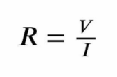
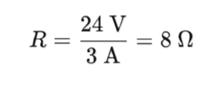

1. Fórmula da Lei de Ohm

Onde:
I = Corrente (em amperes, A)
V = Tensão (em volts, V)
R = Resistência (em ohms, Ω)
2. Substituindo os Valores:
Dessa forma, podemos concluir que a resistência do resistor é de 8 Ohms (Ω).